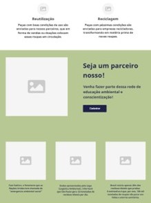
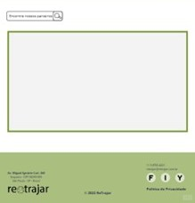

Projeto RETRAJAR
1º Semestre - Projeto Interdisciplinar
I. Descrição e Tecnologias
O RETRAJAR é um projeto focado na conscientização ambiental e sustentabilidade. O objetivo principal foi desenvolver uma solução que aliasse tecnologia e preservação do meio ambiente, abordando o ciclo de vida de produtos e o impacto do consumo.
As tecnologias e ferramentas utilizadas incluíram:
- Ferramentas de Design: Para a prototipação da interface.
II. Minha Participação
Como integrante do projeto interdisciplinar, participei ativamente da pesquisa temática sobre sustentabilidade e da elaboração da estrutura de apresentação mobile. Contribuí na definição da identidade visual do projeto e na organização dos fluxos de informação para garantir que a mensagem de conscientização fosse clara e impactante.
III. Código-Fonte
Você pode conferir os detalhes da apresentação e prototipação no link abaixo:
Ver no GitHubIV. Screenshots

